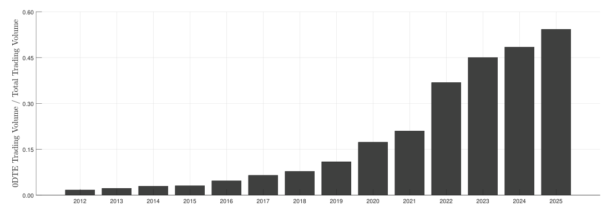

ภาพรวม paper: 0DTE price บอกอะไร
บทเปิดทางของ paper asset pricing: ราคาของ 0DTE option กำลังบอกอะไรเกี่ยวกับ risk premium ระหว่างวัน
คำตอบใหญ่
paper พบว่า 0DTE option prices สะท้อน pricing kernel แบบ U-shape: ตลาดให้ราคาสูงทั้งกับ state ตลาดลงแรงและตลาดขึ้นแรง โดย upside risk สำคัญผิดปกติเมื่อเทียบกับ option อายุยาว
เส้นทางเรียน
- asset pricing ถามอะไร
- physical vs risk-neutral distribution
- pricing kernel
- option returns
- variance risk premium
- equity premium และ predictability
- SSD bounds
- strategy และ after 2022

ถามตัวเอง
- paper นี้ถามเรื่อง trading rule หรือเรื่องราคาสะท้อน risk premium
- ทำไม volume 0DTE ที่โตขึ้นถึงสำคัญ